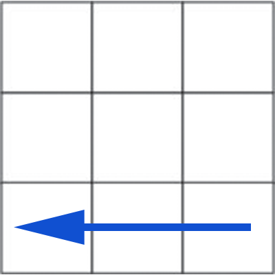
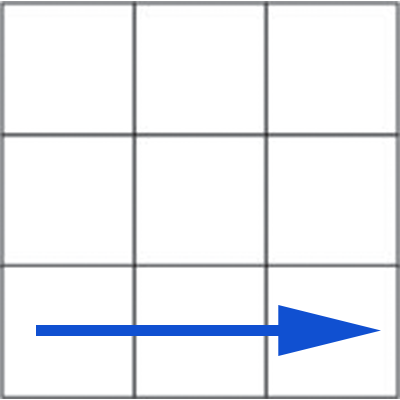

Step 8: Orient Corners
The final (and most difficult) step. While the algorithm used here is pretty simple, most people will get lost since the algorithm will mess up the rest of the cube until all pieces are completed. Don't let that phase you. We are going
to do this algorithm twice or four times until our corner is oriented correctly. Then we are going to do it for each corner. Once all the corners are rotated correctly, the cube will be completed.
Rotating a Corner
This algorithm will rotate the front-right-top corner of the cube. Repeat it until it is oriented correctly.
Ignore the other stickers, focus only on the corner you're solving.




R' D' R D
Congratulations!
Once you complete this step, you are now completely prepared to solve a fresh cube. Go ahead and click the home button and try it out on a fully randomized cube. Good luck!